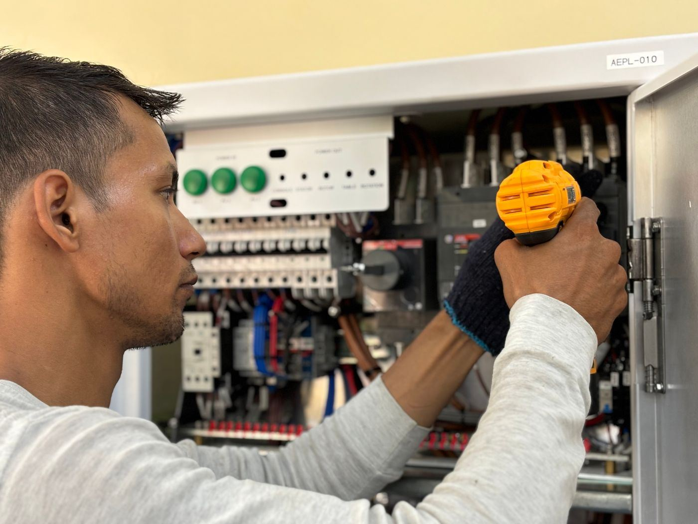
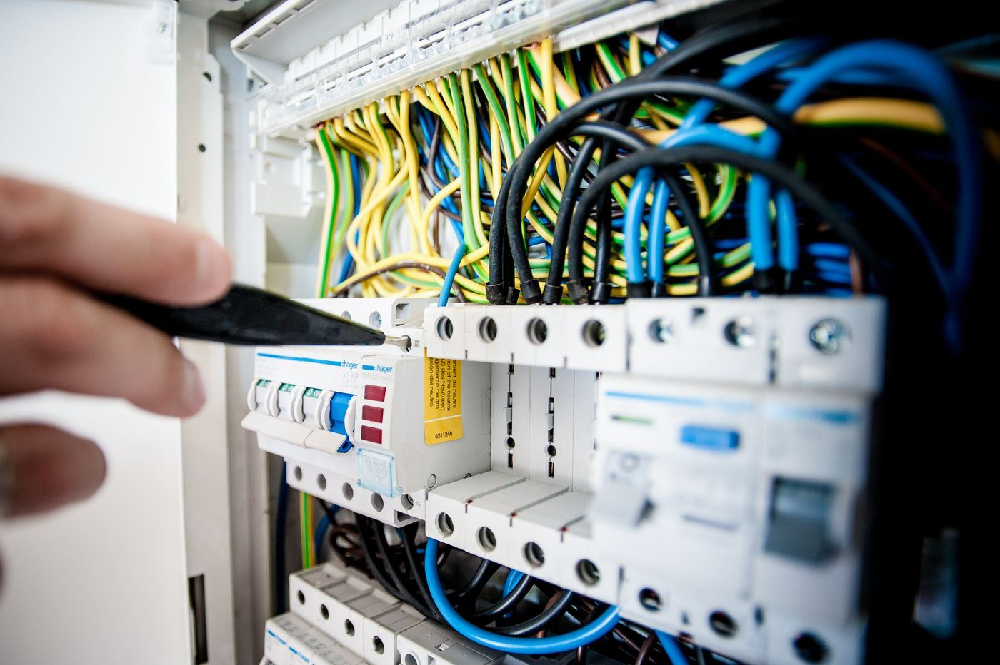

Residential and commercial electrical work in Fort Worth, around the clock.
A1 Electrician Services handles residential and commercial electrical work in Fort Worth, including service upgrades, wiring and rewiring, fixture installation, ceiling fans, troubleshooting, circuit breakers, emergency repairs, safety inspections, and power restoration.
Rated 5.0 from 32 TrustAnalytica reviews.
Call to book: +1 817-717-2361
Services
| Service upgrades | Upgrades to existing electrical service. |
| Wiring and rewiring | Wiring and rewiring work for homes and businesses. |
| Fixture installation and ceiling fans | Fixture installation, including ceiling fans. |
| Troubleshooting and circuit breakers | Troubleshooting electrical problems and breaker work. |
| Emergency repairs and safety inspections | Emergency repairs and safety inspections. |
| Power restoration | Help getting power restored. |
Photos


All photos on this page are stock photos, not photos of this business.